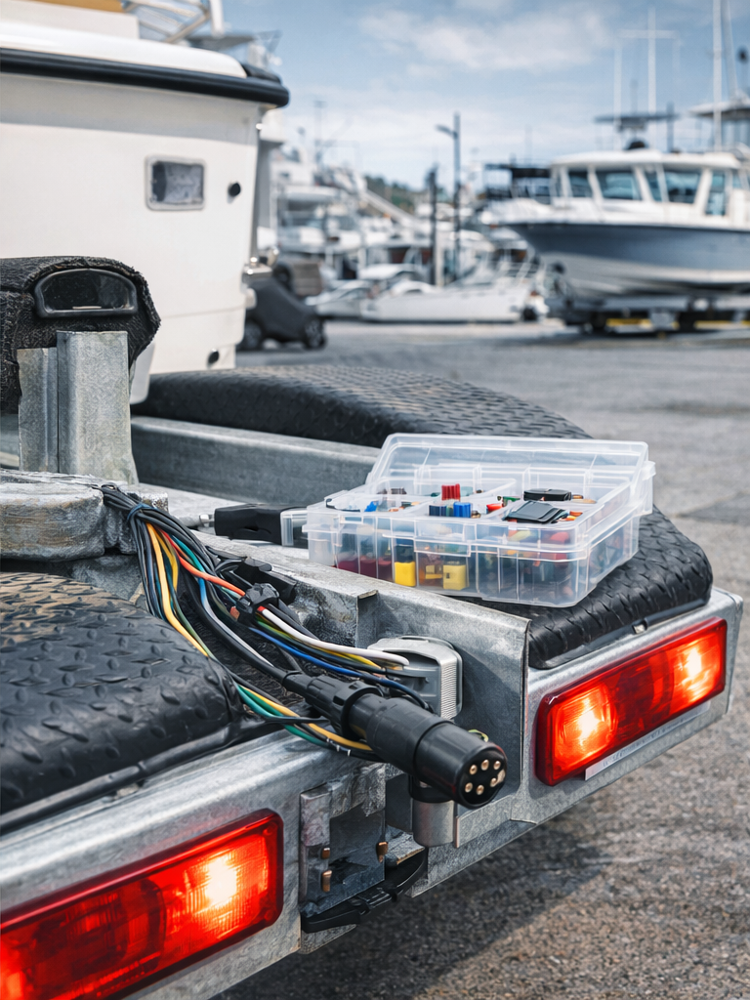

Trailer Wiring & Lights
Ground faults, corroded plugs, failed lights, full rewires, harness cleanup, and trailer wiring repairs that hold up in Florida conditions.
Space Coast Marine Wire diagnoses and repairs trailer lights, battery systems, bilge pumps, navigation lights, switch panels, corroded wiring, and common marine electrical issues at your home, marina, or storage yard.

Start with quick cash services like trailer lights and battery issues, then grow into higher-ticket electrical cleanups, accessory installs, and sailboat refit work.
Ground faults, corroded plugs, failed lights, full rewires, harness cleanup, and trailer wiring repairs that hold up in Florida conditions.
Battery switches, fuse panels, bilge pumps, livewell systems, navigation lights, charging issues, and messy or unsafe wiring cleanup.
Older sailboats often have years of patches and mystery wiring. We help trace faults, simplify systems, and make wiring easier to trust.
Basic installs and rewiring support for marine accessories including battery chargers, switches, lights, and selected electronic add-ons.
Buying a used rig? Get a practical electrical inspection so you know what is safe, what is failing, and what will cost money later.
We come to your home, marina, or storage yard across Brevard County so you can stop dragging broken wiring problems from shop to shop.
The goal is simple: get enough information fast to price the job correctly, show up prepared, and fix the problem without wasting your time.
Send photos of the trailer plug, lights, battery area, fuse panel, or damaged wiring along with your location and boat or trailer type.
We give you the likely issue, service-call pricing, and the best next step based on what the photos show.
We come to you, diagnose the problem, and complete the repair or map out the next phase if the job is larger.
Primary service area for mobile marine electrical work.
These answers help pre-qualify calls and set expectations before the first conversation.
We focus on mobile boat, sailboat, and trailer electrical repairs such as trailer lights, bad grounds, battery systems, bilge pumps, navigation lights, switch panels, and common marine wiring issues.
Yes, depending on access rules, vendor approval, and the marina’s outside-contractor requirements. Home, yard, and storage-yard calls are also available.
Yes. Texting clear photos is the fastest way to get a rough range and confirm whether the issue looks like a small repair or a larger rewire.
No. This business is positioned around boat, sailboat, and trailer electrical troubleshooting and repair rather than marina infrastructure electrical contracting.
Ready to book? Call now or send photos and a short description of the issue.
Phone: (321) 555-1234
Email: info@scmarinewire.com
Hours: Mon–Sat, 8:00 AM–6:00 PM
Best way to start: Text your location, boat or trailer type, and a few clear photos of the issue.